(10 septembre 1956 – 25 mai 2021)
Par Amanda Borschel-Dan, le 28 mai 2021 – Extrait de The Times of Israel
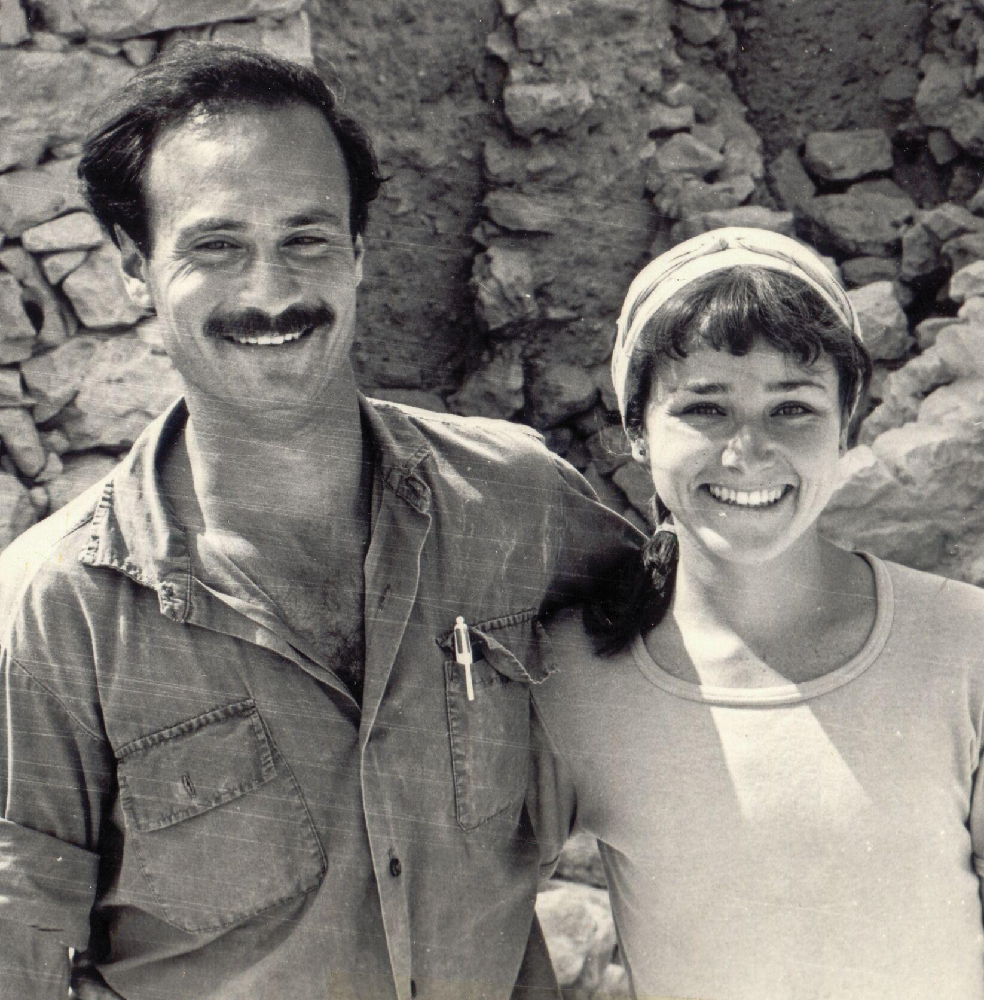
L’éminente archéologue de l’époque biblique, le Dr Eilat Mazar, est décédée à 64 ans des suites d’une longue maladie mardi dernier.
Connue pour sa découverte du « palais du roi David » dans la Cité de David et des artefacts et constructions liés à la période biblique, Mazar était l’héritière d’une dynastie d’archéologues israéliens. Elle a mené des fouilles à plusieurs endroits, notamment sur deux sites de la Cité de David: au-dessus de la source Gihon et dans l’Ophel sur le versant inférieur du Mont du Temple (ou du complexe Al-Aqsa).
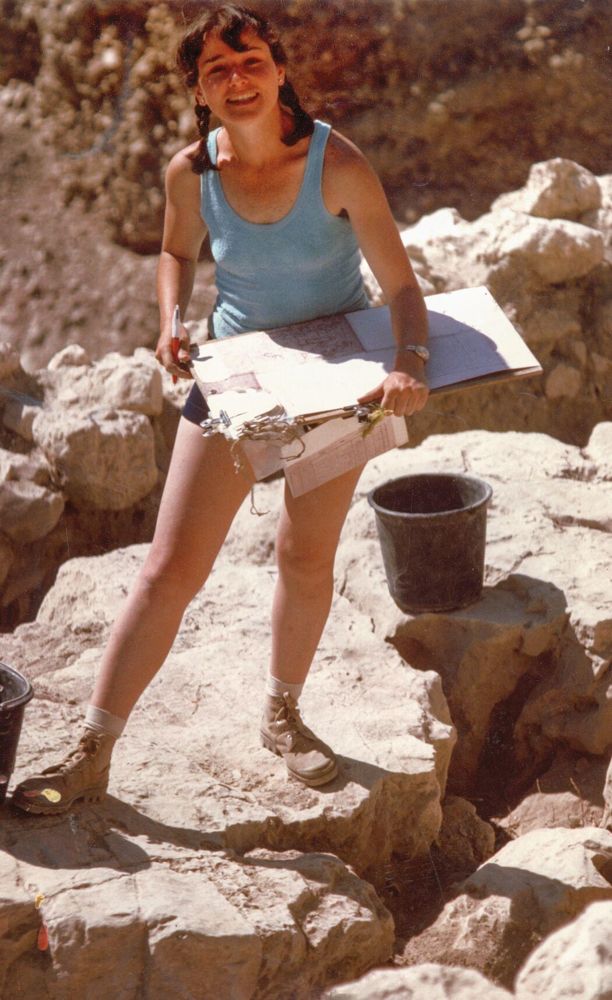
Mazar était une archéologue de terrain, chercheuse et chargée de cours à l’Institut d’archéologie de l’Université hébraïque de Jérusalem, où elle a obtenu tous ses diplômes. Parmi ses découvertes, on compte quelques-uns des plus anciens artefacts connus de la ville antique, datant d’une époque aussi ancienne que les XIIe et XIe siècles avant notre ère selon Mazar, qui s’attelait à fournir des preuves scientifiques de la Monarchie unifiée d’Israël et de Judah.
Dans son enfance, Mazar accompagnait son grand-père, le professeur Benjamin Mazar, lors de ses fouilles de la Jérusalem antique, notamment dans la Cité de David et le quartier de l’Arche de Robinson près du mur Occidental, dont elle a supervisé la publication des résultats. Après avoir obtenu sa maîtrise, elle a travaillé sur la campagne de fouilles du Dr Yigal Shiloh de 1981 à 1985, qui a découvert le quartier royal de l’ancienne Jérusalem dans la cité de David. Elle a rapidement été nommée responsable de fouilles.
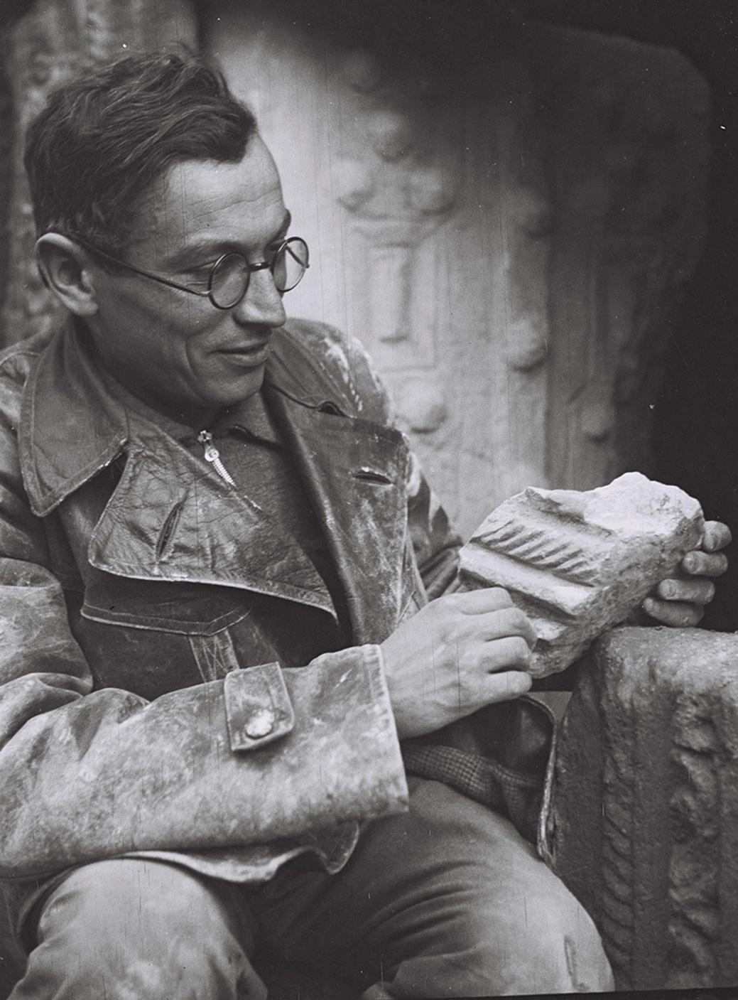
Sa carrière est parsemée de conflits d’interprétation avec ses collègues universitaires. Mais sa découverte la plus controversée est sans nul doute la grande structure qu’elle a excavée en 2005 dans la Cité de David, et qui est envisagée comme le palais du roi David.
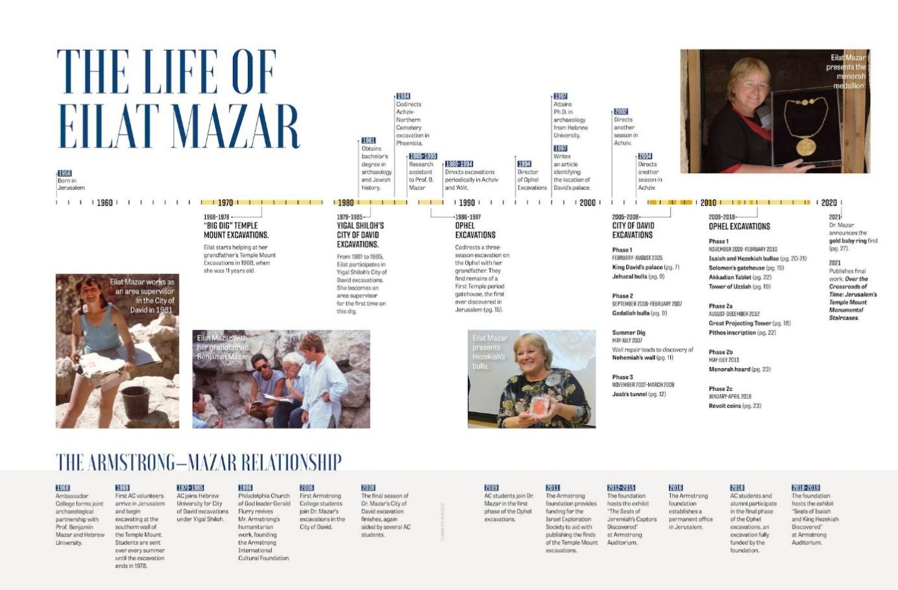
En 50 ans de fouilles, elle a relié Israël moderne aux rois et aux prophètes hébreux
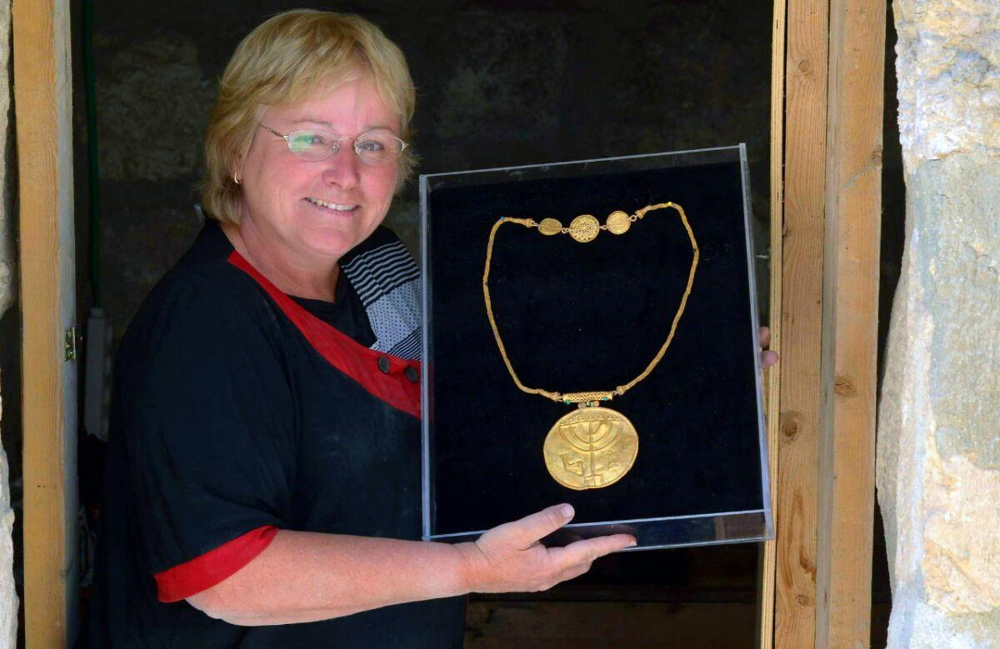
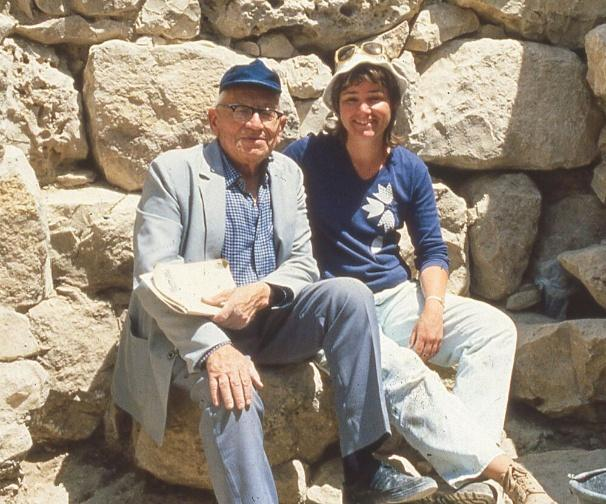
Son emplacement dans le parc national de la Cité de David, a-t-elle écrit dans un article de la Biblical Archaeological Review en 2006, se fonde sur le travail d’une autre femme archéologue, Kathleen Kenyon, qui a mené des fouilles dans la région dans les années 1960.
Dans cet article, Mazar révèle sa philosophie sur l’historicité du texte biblique comme un guide pour les fouilles archéologiques universitaires. « L’une des nombreuses choses que j’ai apprises de mon grand-père, c’est la façon de se rattacher au texte biblique: revenez-y encore et encore, car il contient des descriptions de la réalité historique authentique. Il n’est pas aisé de distinguer les couches de textes qui se sont superposées les unes sur les autres au fil des générations; nous n’avons pas toujours les outils pour le faire. Mais il est évident que cachés dans le texte biblique se trouvent des éléments de détails de la vérité historique ».
Cette idée d’utiliser la Bible comme source de vérité historique est devenue de plus en plus controversée dans les couloirs des universités israéliennes. Mazar fut également l’avocate de la nécessité d’une surveillance archéologique sur le Mont du Temple et de la souveraineté israélienne sur les plusieurs tonnes de terre qui y ont été illégalement excavées – dont il reste plusieurs monticules qui pourraient révéler des découvertes historiques grâce au projet de tamisage du mont du Temple.
Mazar a également exprimé la nécessité de préserver l’archéologie dans le parc archéologique de l’Arche de Robinson, qui avait été menacé lors des négociations gouvernementales sur la construction d’une zone de prière mixte.
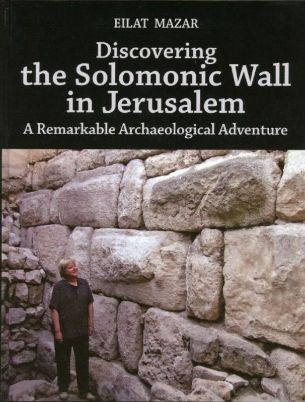
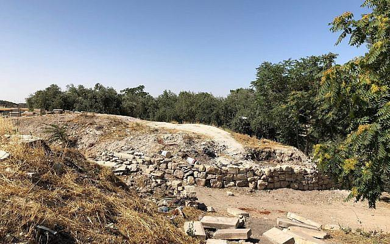
Illustration: deux des monticules de terre ancienne déterrés illégalement sur le mont du Temple / l’esplanade des mosquées, le 18 juin 2018. (Crédit: Amanda Borschel-Dan / Times of Israel)
Malgré leurs perspectives divergentes persistantes, les pairs de Mazar s’en souviennent comme d’une bonne amie et une collègue passionnée.
Le professeur Israel Finkelstein de l’Université de Tel Aviv a déclaré au Times of Israel que « malgré nos différences d’interprétation, je respectais son travail; nous étions de bons amis et partagions une passion pour le passé de la Terre d’Israël ».
Mazar, selon Finkelstein, était « l’une des archéologues israéliens les plus éminents et les plus influents, bien connue et respectée à la fois dans son pays et sur la scène internationale. Elle a grandement contribué à notre compréhension de l’archéologie et de l’histoire ancienne d’Israël, en particulier en ce qui concerne la Jérusalem de l’époque biblique. Les résultats de ses projets ont permis de reconstituer le tracé de la ville, sa culture matérielle et son impact sur la Judée et au-delà ».
Le professeur Aren Maeir, directeur de l’Institut d’archéologie de l’Université de Bar-Ilan, a déclaré: « Elle était sans aucun doute l’un des chercheurs les plus importants de l’ancienne Jérusalem, et elle a largement contribué à notre compréhension de la ville à diverses époques. Bien que certaines de ses interprétations ne soient pas admises par tous, sa contribution est très substantielle ».
Lorsqu’il y a plusieurs années, le Times of Israel a rencontré Mazar dans son bureau bondé de l’Université hébraïque, situé dans le magnifique bâtiment en pierre de l’Institut sur le mont Scopus, son soutien à ses collègues – et à une nouvelle génération d’archéologues – était évident.
« Les archéologues israéliens sont des chercheurs de renommée internationale, dont beaucoup sont des femmes, soit dit en passant. Dans un domaine considéré comme « macho », il y a de nombreuses femmes archéologues en Israël », a déclaré Mazar.
« Je les vois [les chercheurs israéliens] étudier et identifier des processus dynamiques, des cultures différentes qui se chevauchent – rechercher les diverses influences », avait affirmé Mazar, soulignant les travaux remarquables menés dans le domaine de la préhistoire par une équipe de chercheurs « locaux », « souvent des femmes », avait-t-elle souligné, formées au sein de l’institut.
« Bien sûr, nous [le peuple juif] sommes au premier plan de la recherche sur notre culture… Nous [le peuple juif] sommes ici et nous plaçons [la culture juive] au centre [de nos recherches], mais il y a vraiment des chercheurs dans tous les domaines, sur tous les sujets et toutes les époques », avait-elle ajouté.
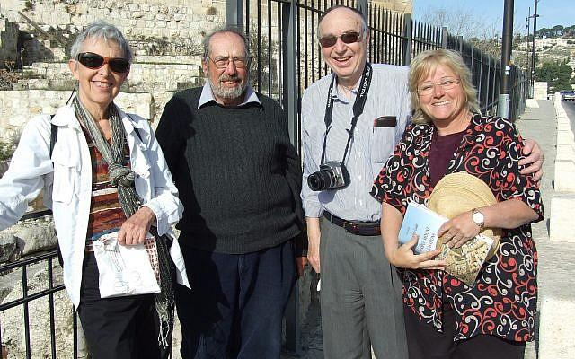
Devant les fouilles d’Ophel, de gauche à droite: Suzanne Singer, ancienne rédactrice en chef du BAR, l’archéologue israélien Dr Gabriel Barkay, Hershel Shanks, rédacteur émérite du BAR décédé récemment, et l’archéologue israélienne Dr Eilat Mazar. (Eilat Mazar)
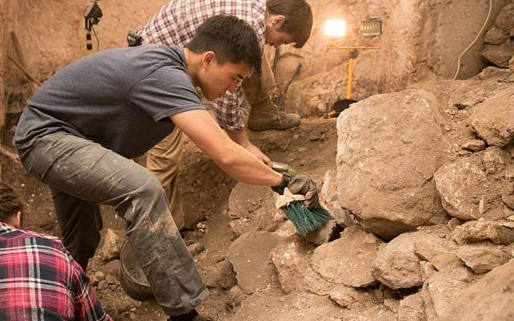
Des étudiants du Herbert W. Armstrong College participent aux fouilles du Dr Eilat Mazar à Ophel, à Jérusalem. (Autorisation) C’est également l’héritage chrétien
Une autre étape quelque peu controversée de la carrière de Mazar a été sa volonté de s’associer à des alliés et des mécènes chrétiens pour poursuivre son travail. Rien que pour ses fouilles de 2018 à l’Ophel, la Philadelphia Church of God a versé un demi-million de dollars pour financer la reprise des fouilles.
Lors d’un gala organisé en 2018 au King David Hotel à Jérusalem, pour le lancement d’une exposition d’artefacts rares de l’époque du Premier Temple et, d’une exposition à l’Auditorium Armstrong d’Edmond, Oklahoma, d’empreintes de sceaux de noms bibliques exceptionnels, elle a souligné les liens durables de sa famille avec la communauté chrétienne.
« Il y a exactement 50 ans, juste après l’unification de Jérusalem, en février 1968, le professeur Benjamin Mazar, mon grand-père, a commencé des fouilles archéologiques au nom de l’Université hébraïque de Jérusalem, juste au pied des murs de ce complexe du mont du Temple vieux de 2 000 ans. À la fin de cette année, M. Herbert W. Armstrong, le fondateur de l’Ambassador Cultural Foundation, est devenu le plus important soutien financier des fouilles », a expliqué Mazar.
Lors du gala au King David, Mazar a décrit comment Armstrong, après avoir rencontré son grand-père en 1968, a envoyé des centaines d’étudiants de l’Ambassador College, « permettant ainsi aux fouilles d’être menées pendant 10 années consécutives, les plus grandes fouilles en Israël ».
« Mais autre chose, non moins important, s’est produit: un lien d’amitié, d’amour et d’estime miraculeux s’est créé dès le début entre M. Armstrong et le professeur Mazar. Un lien si fort qui a non seulement duré jusqu’à la fin de leur vie, mais qui reste une source d’inspiration pour nous tous », a déclaré Mazar.
Parmi les découvertes de Mazar
Les touristes qui visitent le musée d’Israël peuvent voir l’une des superbes découvertes de Mazar, un trésor exceptionnel d’artefacts d’or et d’argent trouvés dans un édifice byzantin du VIe siècle, dont le plus impressionnant est un médaillon en or massif de 10 centimètres orné d’une Menorah et d’autres éléments d’iconographie juive.
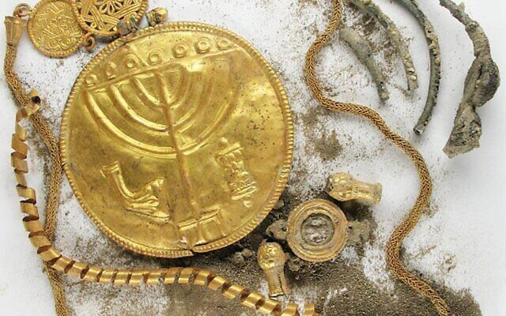
Médaillon en or massif avec une Menorah. Il a été trouvé dans un édifice byzantin du VIe siècle près du mur sud du Mont du Temple lors d’une fouille dirigée par le Dr Eilat Mazar en 2013. (Université hébraïque).
Mais une grande partie de son héritage matériel se trouve dans le parc national des Murs autour de Jérusalem, qui abrite l’Ophel, et dans le parc national de la Cité de David. Cependant, il a fallu près d’une décennie à Mazar pour trouver un mécène et le soutien nécessaire pour ses fouilles décisives de 2005 à la Cité de David.
« Pour être honnête, ça a demandé beaucoup de courage, ainsi que de l’argent, pour soutenir cette fouille. Mon initiative, c’est le moins qu’on puisse dire, n’avait pas reçu un soutien massif de la communauté archéologique », a écrit Mazar dans BAR.
Cependant, après avoir découvert un trésor de constructions très anciennes, de poteries et d’autres trouvailles de l’époque du Premier Temple, son intuition basée sur le travail de Kenyon semblait confirmée. Parmi les objets figurait une bulle inscrite (un sceau d’argile) avec un lien biblique.
Elle en décrit le déchiffrement à sa façon modeste et franche dans l’article de BAR.
« Tard dans la nuit, quand les enfants [trois fils et une fille] dormaient et que la maison était calme, j’ai commencé à l’étudier. Lentement, j’ai déchiffré le nom sur la première ligne: Yehuchal. Serait-ce un nom biblique?
Je ne me souvenais d’aucun Yehuchal dans la Bible. Peut-être que ma lecture du nom était erronée. Mais juste pour m’en assurer, j’ai pris sur l’étagère une encyclopédie biblique.
Il était là, sous mes yeux – dans le livre du prophète Jérémie: «le roi Sédécias envoya Yehuchal (Jehucal en anglais) fils de Shelemiah au prophète Jérémie pour prier pour le peuple » –Jérémie 37: 3
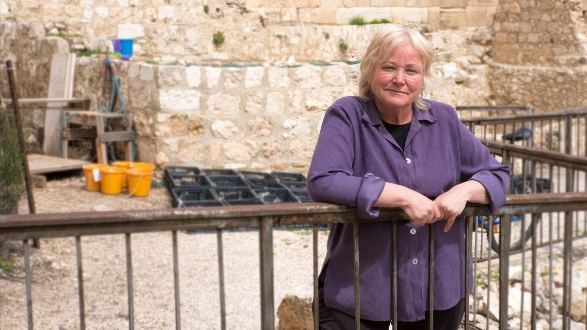
Le directeur exécutif de la Cité de David et lauréat du prix d’Israël David Beeri, a déclaré mercredi: « Je me souviens de l’appel téléphonique tard dans la nuit, quand elle m’a appelé pour me faire part de sa découverte du sceau de l’un des ministres du roi Sédécias. Elle était très excitée. Elle était tellement heureuse d’avoir le privilège de participer à des découvertes qui correspondent exactement aux versets de la Bible et de voir de ses propres yeux la Bible prendre vie. Eilat restera à jamais dans les mémoires comme une pionnière parmi les plus grands érudits de Jérusalem à travers les âges. Que sa mémoire soit bénie ».
Des années plus tard, à quelques mètres de la bulle Yehuchal, elle a trouvé une empreinte de sceau appartenant à un deuxième homme de haut rang, « Gedaliah, fils de Pashur », qui se trouve également dans le livre de Jérémie.
D’autres empreintes de sceaux ont suivi lors des fouilles ultérieures. Plus récemment en 2018, son équipe a découvert une empreinte de sceau du VIIIe siècle avant notre ère dans les vestiges du Premier Temple près du mont du Temple de Jérusalem. Son interprétation n’a pas non plus été sans controverse: la bulle de forme ovale n’était pas intacte et sur sa partie lisible, il y a une inscription avec les lettres hébraïques du Premier Temple qui semblent épeler le nom de « l’Yesha’yah[u] » (Appartenant à Isaïe). Sur la ligne au-dessous, il y a le mot partiel « nvy », qui pourrait potentiellement être un morceau du mot « prophète ».
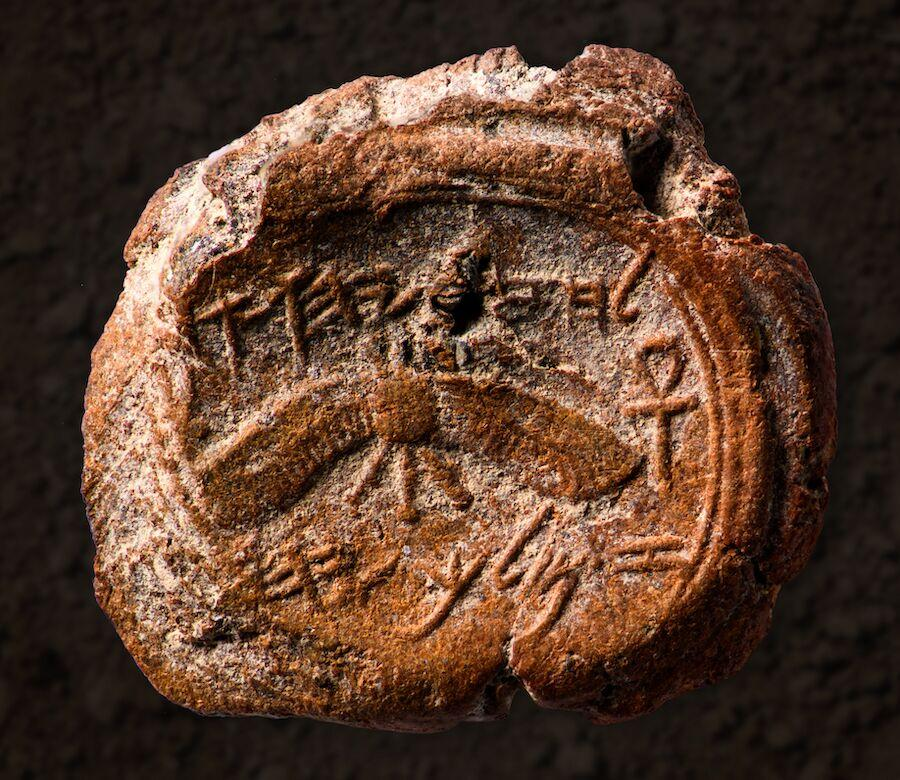
La bulle du roi Ézéchias montrée à l’Armstrong Auditorium à Edmond, dans l’Oklahoma, au mois de juin 2018. (Autorisation: Autorité israélienne des antiquités, Photo: Reese Zoellner/Watch Jerusalem)
Il a été trouvé à quelques mètres seulement de l’endroit où, en 2009, l’équipe de Mazar avait découvert une bulle unique et intacte portant l’inscription « du roi Ezéchias de Judée ». La découverte n’a été publiée qu’en 2015.
Lors du gala 2018 à l’hôtel King David, Mazar a déclaré: « L’identification de l’empreinte de sceau du roi Ézéchias est certaine, sans l’ombre d’un doute, comme vous pouvez le lire par vous-même. « Appartenant au roi Ézéchias, fils d’Achaz, roi de Judée ». Le sceau d’Esaïe, a-t-elle dit, reconnaissant les critiques des érudits, est beaucoup moins certain. Dans sa présentation, Mazar elle-même a présenté la découverte comme « l’empreinte potentielle du sceau du prophète Isaïe ».
Robert Cargill, professeur assistant d’études religieuses à l’Université de l’Iowa et ancien rédacteur en chef de BAR, a salué le « soin prudent et responsable de Mazar ». « Elle ne s’est pas précipitée pour affirmer de manière concluante qu’elle avait trouvé le sceau d’Isaïe… Dans notre article, elle propose de possibles alternatives », a déclaré Cargill.
Indépendamment de leurs différences d’interprétation persistantes, Finkelstein a déclaré: « Les fouilles à Jérusalem sont une tâche compliquée, qui nécessite des compétences personnelles particulières. Le caractère fort et la détermination d’Eilat Mazar ont été essentiels à son succès sur le terrain. »
« L’impact d’Eilat Mazar sur l’archéologie d’Israël en général et de Jérusalem en particulier figurera pour toujours parmi les pierres angulaires de l’archéologie d’Israël. Elle nous manquera beaucoup », a déclaré Finkelstein.
Isaiah Bulla, une empreinte de sceau d’argile de 2700 ans qui appartenait potentiellement au prophète biblique Isaïe. (Ouria Tadmor / © Eilat Mazar)
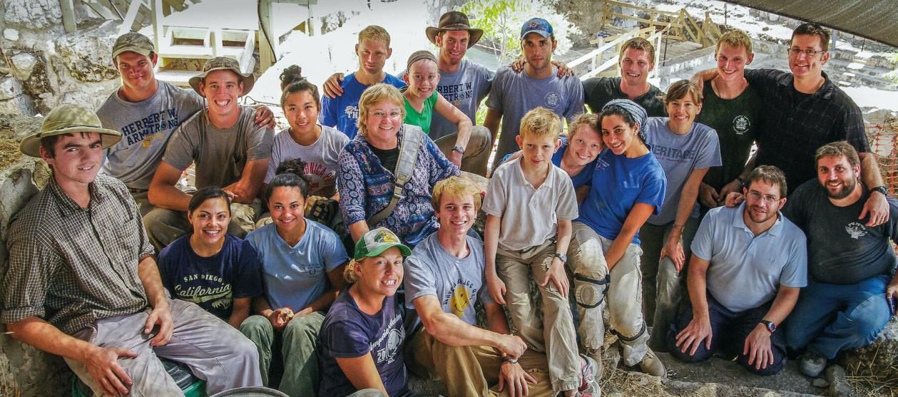
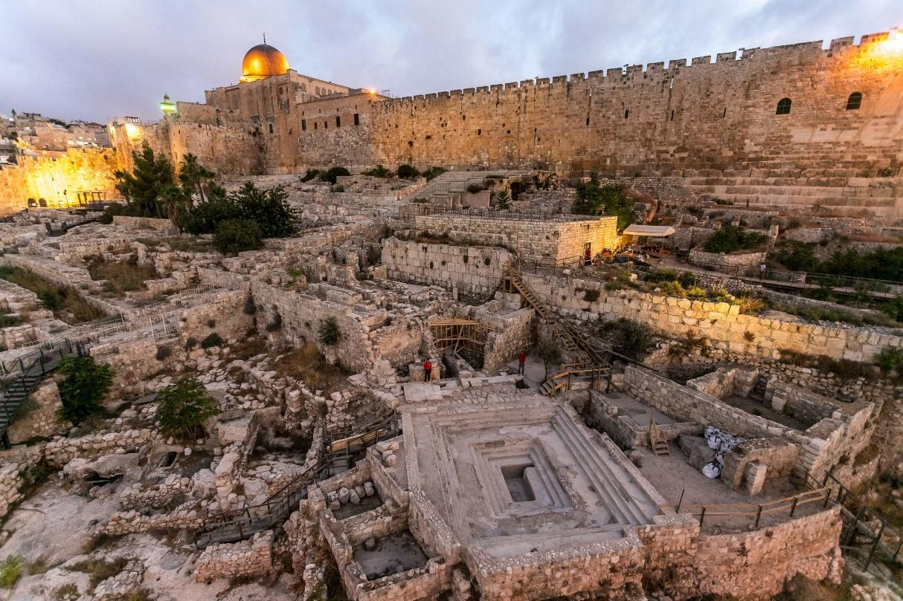
La colline de l'Ophel, située juste au sud de l'ancien mont du Temple à Jérusalem, est l'un des sites archéologiques les plus importants de la période du Second Temple en Israël, avec d'importants vestiges architecturaux et de riches collections. Des milliers de pèlerins y montaient chaque année, et c'est le lieu idéal pour étudier la réalité de Jérusalem en tant que « ville-temple » et l'un des principaux lieux de pèlerinage du monde antique.
Des fouilles de grande envergure, dirigées par Benjamin Mazar de l'Université hébraïque de Jérusalem, ont débuté ici en 1968, mettant au jour d'importants vestiges des périodes omeyyade, byzantine, romaine, du Second Temple et du Premier Temple, tels que les gigantesques murs de soutènement du complexe du Temple d'Hérode et les rues adjacentes.
D'autres fouilles ont été menées ici au cours des dernières décennies par Eilat Mazar de l'Université hébraïque et par Ronnie Reich, Yuval Baruch, Yaakov Billig et d'autres archéologues de l'Autorité des Antiquités d'Israël. Les fouilles renouvelées de l'Université hébraïque et de l'Institut Armstrong d'archéologie biblique sont situées dans la partie orientale de la colline d'Ophel, découvrant des vestiges substantiels de la période byzantine et principalement de la période du Second Temple.
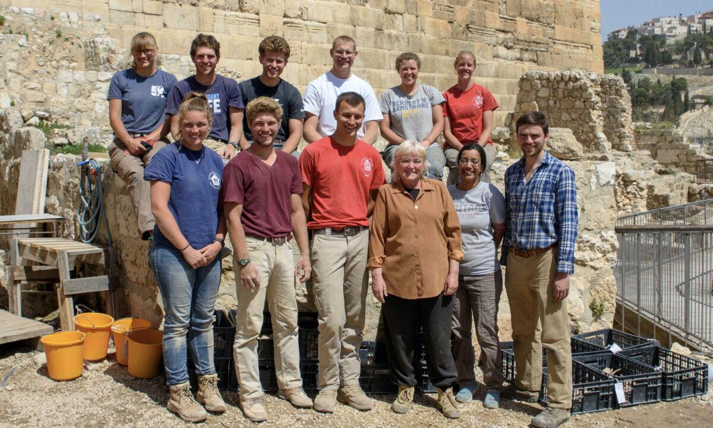
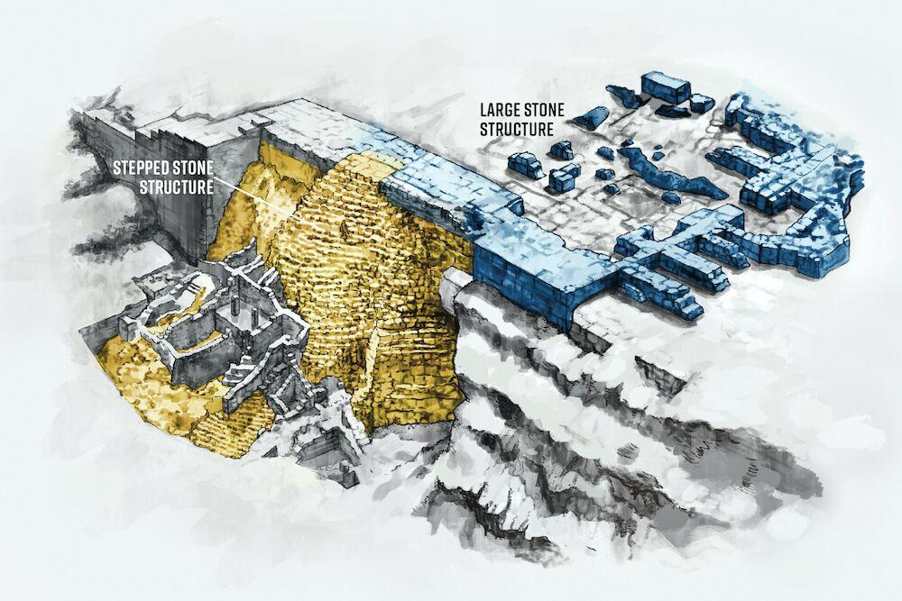
Lorsque David devint roi d'Israël, Jérusalem (appelée « Jébus ») était habitée par les Jébuséens. En tant que roi, l'une des principales priorités de David était de conquérir Jérusalem. David comprenait le lien entre Jérusalem et Abraham et savait que Jérusalem serait la capitale d'Israël.
« Étudie [la Bible] encore et encore, car elle contient des descriptions d'une réalité historique authentique », lui avait appris son grand-père. C'est ce que fit Mazar. Lorsqu'elle étudia 2 Samuel 5, un verset en particulier lui sembla particulièrement pertinent: « Lorsque les Philistins apprirent que David avait été oint roi sur Israël, tous les Philistins montèrent à sa recherche. David l'apprit et descendit à la forteresse » (verset 17).
Mazar remarqua que le mot « forteresse » était le même que celui qui désignait la forteresse jébusienne elle-même: metsuda (mentionnée au verset 7). Elle remarqua également que, menacé par les Philistins, David descendit et pénétra dans la forteresse depuis sa demeure. Pour ce faire, conclut Mazar, le palais de David devait être situé au sommet de la Cité de David, juste à l'extérieur de la limite nord de la ville jébusienne, à un endroit qui n'était pas encore à l'intérieur de la forteresse elle-même.
En 1997, après près d'un an de recherches sur cette théorie – et tout juste diplômée de l'Université hébraïque de Jérusalem –, le Dr Mazar, encouragée et soutenue par son grand-père, publia sa théorie dans la Biblical Archaeology Review. Son article, intitulé « Excavate King David’s Palace! », ne laissait aucun doute sur ses intentions.
« Un examen attentif du texte biblique, combiné aux résultats parfois passés inaperçus des fouilles archéologiques modernes à Jérusalem, nous permet, je crois, de localiser le site du palais du roi David », écrivait-elle. « Plus passionnant encore, il se trouve dans une zone désormais propice aux fouilles. Si certains jugent trop spéculative l'hypothèse que je vais avancer dans cet article, ma réponse est simple: mettons-la à l'épreuve, comme les archéologues tentent toujours de le faire: par des fouilles ».
L'article était accompagné d'une grande photographie de la Cité de David, avec une flèche géante pointant vers l'endroit où, selon elle, se trouvait le palais du roi David. « C’est là », déclara-t-elle avec audace.
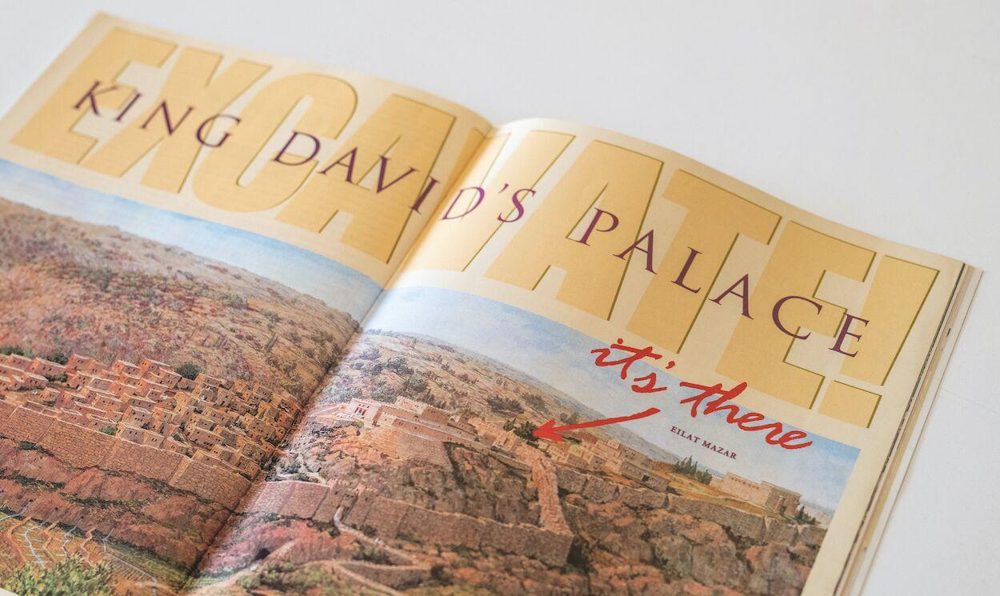
La théorie de Mazar a rencontré une certaine résistance parmi les chercheurs, en partie parce que les fouilles précédentes dans la région n'avaient révélé aucune preuve à l'appui de cette théorie. Ce scepticisme a compliqué la levée des fonds nécessaires aux fouilles. Ce n'est qu'en 2005, près de dix ans après la publication initiale de la théorie de Mazar, que deux courageux philanthropes américains ont apporté leur soutien. En février, grâce au soutien de Roger et Susan Hertog, Mazar a enfin pu mettre sa théorie à l'épreuve – par des fouilles!
En quelques semaines, Mazar et son équipe ont découvert les fondations d'un mur massif. Mesurant 30 mètres de long et jusqu'à 3 mètres de large par endroits, il ne s'agissait pas d'un mur de structure ordinaire. De plus, le Dr Mazar a pu dater cet édifice gigantesque des XIe-Xe siècles avant notre ère, soit la même époque que le roi David. Les fouilles ont démarré de manière spectaculaire, et le meilleur restait à venir.
La saison suivante (2006), Mazar découvrit un mur encore plus imposant. À certains endroits, il mesurait 6 mètres de large. De manière tout aussi significative, ce mur plus grand était relié aux murs géants découverts précédemment, indiquant que les deux faisaient partie d'une même structure massive.
En 2007, lors de la troisième saison, Mazar fit une autre découverte cruciale. Elle apprit que les murs de la majestueuse structure palatiale découverte lors des fouilles précédentes s'emboîtaient avec la célèbre Structure en Pierre à Degrés. Haute de 20 mètres et clairement visible depuis le Mont des Oliviers, de l'autre côté de la vallée, cette Structure en Pierre à Degrés est la plus grande structure de l'âge du fer jamais découverte en Israël. Avant la découverte de Mazar, de nombreux archéologues pensaient que cette Structure avait été construite sous la domination jébusienne de Jérusalem.
Mais le fait que les murs découverts par Mazar s'emboîtaient avec la Structure en Pierre à Degrés indiquait que les deux faisaient partie du même édifice massif de l'époque davidique!
« Le fait que les deux structures fassent partie d'une même construction a été pour nous une découverte stupéfiante », a déclaré Mazar.
« Sous nos yeux se trouvait une structure aux proportions massives et à la complexité innovante. Elle témoigne de l'impressionnante maîtrise architecturale et de l'investissement considérable de ses bâtisseurs, de la compétence d'une autorité centrale déterminée, et surtout de l'audace et de la vision de cette autorité ».
Outre les murs massifs, les diverses découvertes de poteries et les échantillons de carbone, qui suggéraient tous une construction de grande envergure datant d'environ 1000 av. J.-C., Mazar a également découvert plusieurs objets plus petits démontrant la nature royale de la structure. Parmi ceux-ci figuraient des ustensiles en ivoire ornés, des restes d'aliments exotiques et des sceaux de personnalités royales – autant de trouvailles qui attestent d'un édifice royal.
Dans ses rapports sur les fouilles du palais, Mazar a également rappelé la découverte d'un chapiteau royal de style phénicien par Kathleen Kenyon à la base de la structure en pierre à gradins. Un chapiteau est la partie supérieure décorative d'une colonne. Les chapiteaux sont souvent ornés de sculptures complexes. Les murs gigantesques du Dr Mazar et les découvertes associées révèlent son origine: ce chapiteau de style phénicien a dû tomber du palais du roi David (construit avec l'aide du roi phénicien Hiram), situé directement au sommet de la structure en pierre à gradins!
Dans un article de 2005 pour Aish.com, Rachel Ginsberg a reconnu l'importance de la découverte du palais de David par le Dr Mazar: « Le Dr Eilat Mazar, sommité mondiale du passé de Jérusalem, a sorti le roi David des pages de la Bible et l'a replongé dans l'histoire vivante. Les dernières fouilles du Dr Mazar dans la Cité de David, à l'ombre sud du Mont du Temple, ont bouleversé le monde archéologique ».
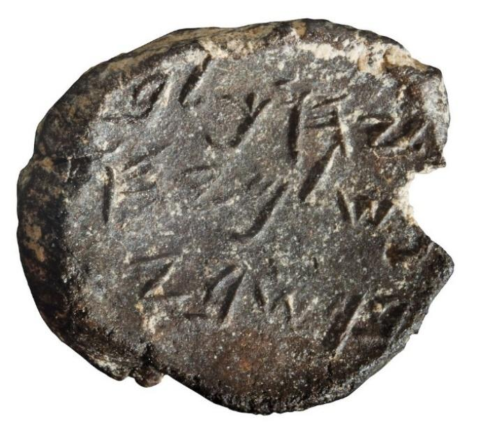
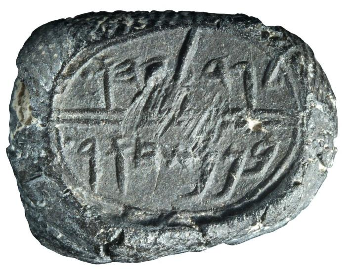
Lors de la campagne de fouilles de 2005, Yoav Farhi, le responsable de zone du Dr Mazar, fit une découverte remarquable. Un jour, alors qu'il travaillait sur les fouilles, il aperçut une minuscule bulle (empreinte de sceau en argile) dans la fissure d'un mur, la lumière du soleil reflétant ses lettres en relief. Mazar emporta la bulle chez elle pour l'étudier et se souvint plus tard d'un moment familial « spécial » vécu en la déchiffrant.
Utilisant un lexique compilé par son second mari, lui-même archéologue décédé en 1997, Mazar découvrit que la bulle portait l'inscription « Appartenant à Jehucal, fils de Shélémia, fils de Shovi ».
Mazar ouvrit alors son encyclopédie biblique, curieuse de savoir si ce nom figurait dans la Bible.
« Lorsque j'ai ouvert l'encyclopédie et que j'ai vu le même nom dans la Bible que sur la bulle, j'ai poussé un cri de surprise qui a résonné dans toute la maison. Heureusement, les enfants dormaient profondément. J'avais l'impression de ressusciter quelqu'un tout droit sorti de la Bible », a-t-elle écrit.
Elle a ensuite réuni ses enfants et leur a montré comment elle avait utilisé le lexique de leur père pour comparer et traduire le texte hébreu.
Jérémie 3 7: 3 rapporte que le roi Sédécias de Juda a envoyé le prince Jéhucal, fils de Chélémia, auprès du prophète Jérémie pour le supplier de prier pour Juda. Jéhucal est également l'un des princes qui ont conspiré contre Jérémie en Jérémie 38: 1-6; il est ici désigné par la forme abrégée « Jucal ».
Mais la découverte de la bulle de Jehucal ne marqua pas la fin de cette histoire remarquable. Deux ans plus tard, l'équipe de Mazar, chargée du tamisage humide, découvrit une autre bulle dans les environs. Celle-ci portait l'inscription suivante:« Appartenant à Guedalia, fils de Pashur ».
Le Dr Mazar consulta à nouveau la Bible, curieuse de savoir si cet homme y était mentionné. Étonnamment, elle découvrit que « Guedalia, fils de Pashur » est mentionné juste à côté de Jehucal dans Jérémie 38: 1. Il s'agissait d'un autre des princes qui cherchaient à tuer le prophète Jérémie!
Les bulles de Jehucal et de Guedaliah font partie des quelque 250 sceaux, bulles et fragments de bulles découverts par Mazar lors des fouilles de la Cité de David. Le nombre impressionnant d'objets officiels et royaux atteste que ce lieu précis a servi de zone administrative royale jusqu'à la destruction de Jérusalem vers 586 av. J.-C.
De plus, les découvertes de Mazar concordent avec celles réalisées par l'équipe de Shiloh dans les années 1970 et 1980, notamment une « Maison des Bulles ». Dans une pièce unique découverte à côté de la structure en pierre à gradins, Shiloh a découvert 51 bulles, dont un autre personnage biblique: « Gemariah, fils de Shaphan ».
Qui était Guemariah? C'était un scribe à la cour du roi Jojakim, mentionné dans Jérémie 36: 10. D’une différence rafraîchissante par rapport à Jéhucal et à Guedalia, Guemariah était l’une des rares personnes à soutenir l’œuvre du prophète Jérémie.
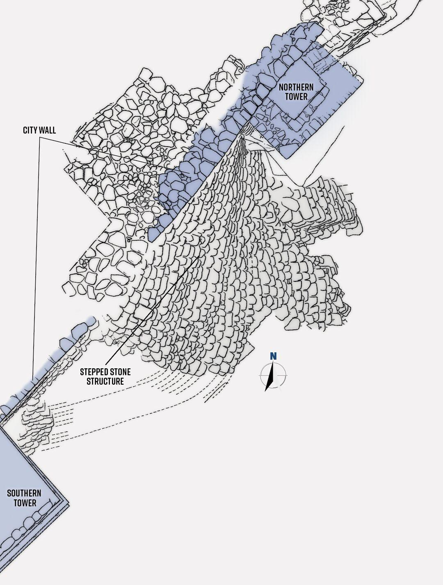
Ci-dessus sont mises en évidence les portions de mur identifiées comme appartenant aux travaux de reconstruction de Néhémie. La tour nord et la partie du mur qui lui est associée ont été datées avec certitude d'environ 450 av. J.-C. La tour sud et le mur ne peuvent être datés avec la même certitude, mais constituent très probablement la continuation de la même structure qui encadrait le périmètre est de la ville: le mur de Néhémie.
Lors de la phase 2 des fouilles de la Cité de David en 2007, le Dr Mazar a entrepris une simple fouille de sauvetage d'une tour courte et robuste, généralement considérée comme hasmonéenne (IIe-Ier siècle av. J.-C.). La tour ne pouvant être réparée sans risque d'effondrement, Mazar a dû la déconstruire entièrement, en documentant soigneusement les pierres et leur position, afin de pouvoir poser de nouvelles fondations et reconstruire la tour.
Les fouilles ont conduit à une découverte sensationnelle inattendue.
Sous la tour, les fouilleurs ont découvert les restes de deux chiens volontairement enterrés, ainsi qu'une riche collection de poteries et d'objets divers de l'époque perse. Les deux chiens, enterrés après leur mort de vieillesse, indiquaient également que le mur avait été construit à l'époque perse. En Perse, les chiens occupaient une place particulière; des fouilles ailleurs en Israël ont mis au jour des sépultures canines similaires de grande envergure datant de l'époque perse.
En utilisant la typologie de la poterie, qui indiquait clairement le début de la période perse, ainsi que les sépultures de chiens, Mazar a daté la construction du mur à environ 450 av. J.-C.
Comme toujours, et comme son grand-père le lui avait appris, Mazar se tourna vers la Bible pour mieux comprendre cette muraille mal construite de l'époque perse. Cette recherche la conduisit au livre de Néhémie. Ce livre relate l'histoire d'un serviteur juif (Néhémie) qui travailla à la cour du roi perse Artaxerxès, puis retourna à Jérusalem pour participer à la reconstruction de la ville. Ces événements se déroulèrent au milieu du Ve siècle avant notre ère.
De retour à Jérusalem, Néhémie (nommé gouverneur) effectua immédiatement une reconnaissance de la ville et constata que ses remparts, déjà effondrés, avaient un besoin urgent de fortification. Une bêche dans une main et une épée pour repousser les ennemis dans l'autre, Néhémie et ses partisans s'employèrent rapidement à construire une muraille autour de Jérusalem. Fait remarquable, et à la grande surprise de leurs ennemis, la muraille de Néhémie fut « achevée le vingt-cinquième jour du mois d'Éloul, en cinquante-deux jours » (Néhémie 6: 15-16).
Bien que la construction d'un mur en si peu de temps soit impressionnante, elle présente un inconvénient. La qualité de la construction en pâtit. La tour et la courte section préservée du mur étaient d'une qualité et d'une finition nettement inférieures, « bâclées », comme l'a noté Mazar.
Un dernier point: la section du mur mise au jour par Mazar se trouvait au sommet de la structure en pierre à gradins. S’agissait-il de la même section décrite dans Néhémie 3: 15-16 et 12: 37, une section construite par Schalloun et Néhémie contre « les escaliers qui descendent de la cité de David », le long de la « maison de David »?
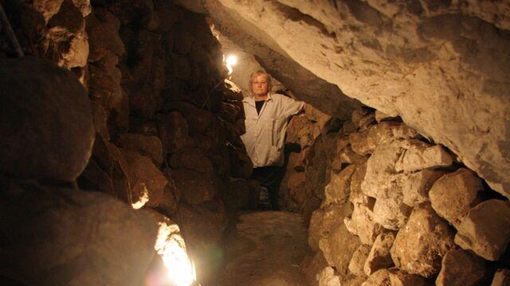
2008 fut la dernière année où Eilat Mazar enfonça une pelle dans le sol de la Cité de David. Lors de ces fouilles, son équipe découvrit un ancien tunnel creusé dans la roche, derrière la structure en pierre à gradins. Long de près de 50 mètres, il était à peine assez large pour permettre à un homme de s'y faufiler. Mazar pensait que ce tunnel servait peut-être à canaliser l'eau et fut finalement intégré à la construction de la structure en pierre à gradins au Xe siècle avant J.-C., à l'époque où le roi David construisit le site.
Mazar se demanda s'il s'agissait bien de celui décrit dans 2 Samuel 5. « Les caractéristiques, la date et l'emplacement du tunnel témoignent avec une forte probabilité que le tunnel d'eau soit celui appelé tsinnor dans le récit de la conquête de Jérusalem par le roi David », déclara Mazar.
Le passage dit: « Or, David dit ce jour-là: “Quiconque montera par le chemin du puits d’eau [tsinnor] et vaincra les Jébusiens… sera chef et capitaine.” »(2 Samuel 5: 8; Nouvelle Version King James). L’un des puissants soldats de David, Joab, fit exactement cela pour infiltrer la ville (1 Chroniques 11: 6).
Mazar et son équipe ont découvert ce tunnel vers la fin de la saison 2008. Faute de temps pour approfondir l'enquête, le tunnel n'est pas encore entièrement creusé. « Nous avons une connaissance générale du tunnel », a-t-elle déclaré, « mais nous sommes loin d'en avoir une vision complète ».
Espérons que les fouilles du tunnel de Mazar seront bientôt terminées et que son histoire, sans aucun doute remarquable, sera révélée!
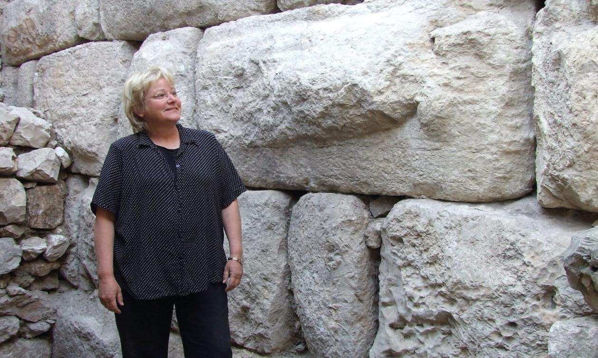
Bien que le Dr Eilat Mazar soit surtout connue pour ses travaux dans la Cité de David, elle a consacré la majeure partie de sa carrière aux fouilles de l'Ophel. C'est sur l'Ophel, au sud du mur sud du mont du Temple, qu'Eilat a développé une passion pour l'archéologie dès son plus jeune âge, en participant aux fouilles du mont du Temple menées par son grand-père, de 1968 à 1978.
Après la victoire d'Israël lors de la guerre des Six Jours, le professeur Benjamin Mazar et l'Université hébraïque de Jérusalem ont été chargés par le gouvernement israélien de fouiller la zone. En collaboration avec Herbert W. Armstrong et l'Ambassador College, les plus grandes fouilles jamais menées en Israël ont débuté. Pendant une décennie, ces institutions ont travaillé main dans la main pour mettre au jour la frontière sud du mont du Temple et de l'Ophel.
Lorsqu’Eilat Mazar a commencé à fouiller l'Ophel au milieu des années 1980, une grande partie des travaux avait déjà été réalisée par son grand-père. Avec une grande partie du remblai supérieur déjà creusé, Eilat n’aurait pas eu bien loin à parcourir pour atteindre « l’or »: des vestiges de l’âge du fer datant de la période de la monarchie de Juda!
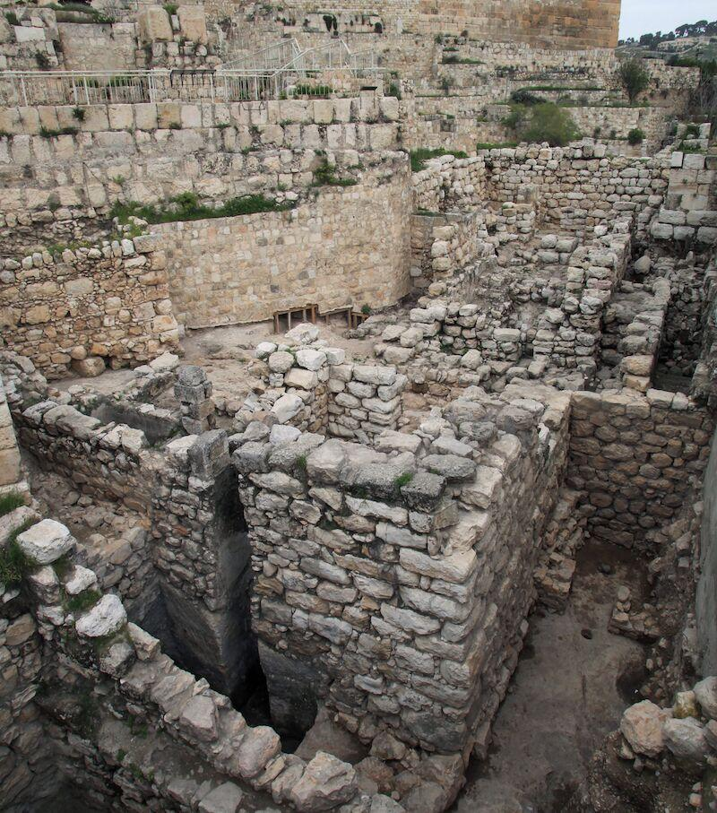
Eilat Mazar a dirigé sa première fouille sur l'Ophel en 1986-1987, sous la direction de son grand-père. Son objectif était de trouver une couche de sol originale de la période du Premier Temple dans une série de pièces que l'on croyait être des pièces de l'âge du Fer. Découvertes par le professeur Mazar lors de fouilles précédentes, ces pièces avaient été réaménagées pour la période du Second Temple. Le Dr Eilat Mazar en a trouvé la couche de sol de la période du Premier Temple et bien d'autres choses encore.
La fouille a commencé modestement, avec une sonde de 50 x 50 centimètres. Presque immédiatement, Eilat Mazar a découvert une couche de brûlure clairement liée à la destruction babylonienne de Jérusalem. Les fouilles se sont ensuite étendues et, en quelques semaines, l'équipe a découvert de nombreux fragments de 12 pithoi brisés (grands récipients de stockage de la période du Premier Temple). Les pithoi découverts par Eilat Mazar étaient les plus grands jamais découverts à Jérusalem et témoignaient d'une administration impressionnante.
Les récipients dataient d'environ le VIIe siècle avant notre ère. L'un des pithoi portait une inscription partielle qui, après reconstruction, disait: « Appartenait au ministre de la Boulangerie ».
Un autre portait l'image d'un palmier, indiquant peut-être que le récipient contenait de l'huile ou du vin de dattes. Suite à ces découvertes, Mazar commença à appeler le site la « Boulangerie royale », faisant partie du somptueux « quartier royal » de l'Ophel. (La Bible rapporte que le roi Salomon s'est construit un nouveau palais et une résidence royale au nord de la Cité de David, sur l'Ophel: 1 Rois 7; Néhémie 3: 25-26.)
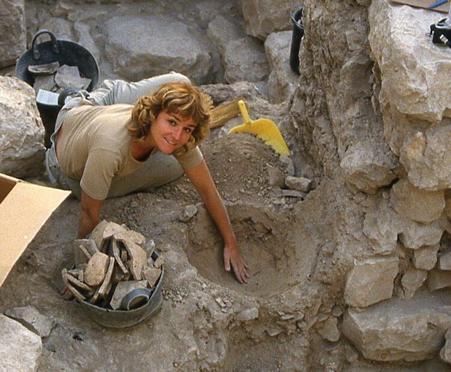
Eilat Mazar place sa main dans l'empreinte créée par un grand récipient en poterie de type pithos* en 1986.
Adjacent à la Boulangerie Royale et relié à celle-ci par des couloirs, les Mazars ont découvert un sol en calcaire au milieu d'une série de pièces étranges, divisées en petites salles. Initialement, la nature de ce réseau de couloirs et de pièces était incertaine. Mais lorsque le géomètre-chef des fouilles a dressé les plans architecturaux, Mazar et son grand-père ont immédiatement reconnu ce qu'ils avaient découvert. Eilat Mazar a décrit ce moment dans son rapport final de fouilles: « Nous n'en croyions pas nos yeux… Soudain, nous avons réalisé que nous étions en présence d'une guérite urbaine typique de la période du Premier Temple, caractérisée par quatre chambres identiques et une grande tour d'accès [la “Grande Tour” de Warren] » (Discovering the Solomonic Wall in Jerusalem).
À l'époque, Eilat Mazar avait réussi à dater la guérite et la “Grande Tour” du début de l'Âge du Fer II (période du début de la monarchie judaïque), mais elle n'a pas pu établir de date plus précise. Ce n'est que près de 25 ans plus tard, lors de ses fouilles à nouveau sur l'Ophel en 2009, qu’Eilat Mazar a pu les dater avec plus de précision du Xe siècle avant notre ère, à l'époque du roi Salomon.
Le Dr Eilat Mazar avait découvert des preuves archéologiques de l'expansion massive de Jérusalem par le roi Salomon, telle que décrite dans 1 Rois 6 et 7!
La porte d'entrée exposée, d'une hauteur préservée pouvant atteindre 6 mètres, est construite dans un style similaire à d'autres portes antiques découvertes à Megiddo, Gezer et Hatsor. Ces portes sont familièrement appelées « portes salomoniques » car elles datent de la même période, au Xe siècle, et témoignent de la présence d'un gouvernement puissant et centralisé qui en standardisait la construction. Il est fascinant de constater que ces mêmes emplacements, à la même époque, sont mentionnés dans un passage consacré au roi Salomon: « Voici le compte rendu de la levée de troupes que le roi Salomon leva pour bâtir… Jérusalem, Hatsor, Megiddo et Guézer » (1 Rois 9: 15).
Dans son rapport final, le Dr Mazar a comparé la porte d'Ophel à celle de Megiddo et a démontré que la longueur des murs, la largeur des passages centraux, l'épaisseur des murs et la taille des chambres sont pratiquement identiques, presque au centimètre près. Cela « semble indiquer que les deux corps de garde ont été construits selon un plan identique, provenant probablement du même cabinet d'architectes », conclut le Dr Mazar.
La Grande Tour (découverte par Sir Warren, voir « Troisième Découverte: Grande Tour en saillie » ci-dessous) constituait une entrée fortifiée et protectrice à angle droit donnant sur le corps de garde de la ville. Aujourd'hui, cette tour est presque entièrement recouverte par la route d'Ophel (elle constitue d'ailleurs le principal élément qui la soutient). Mais si elle était fouillée, la Grande Tour serait l'une des plus hautes structures antiques d'Israël (environ 20 mètres de haut).
La découverte du Dr Mazar est la seule porte de l'âge du fer jamais découverte dans la ville de Jérusalem. Le Dr Mazar a appelé cette structure la « Porte de l'Eau », pensant qu'il pourrait s'agir de la même porte que celle mentionnée dans Néhémie 3: 25-27.
* Un pithos (πί θος) (pluriel pithoi) est un type de grande céramique grecque antique, une profonde jarre ayant une base plus ou moins étroite. Le pithos est utilisé pour stocker des denrées issues de l'agriculture en Grèce antique comme des céréales et des liquides.
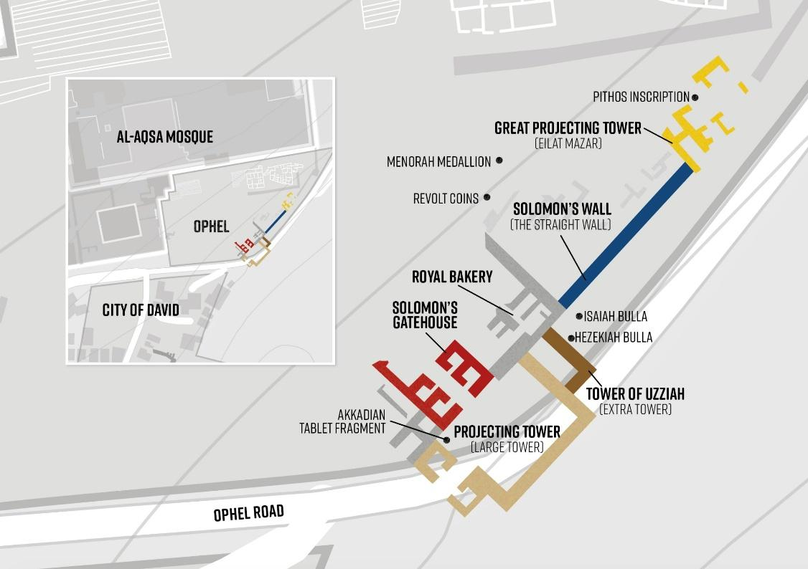
Lors de ses fouilles à Ophel en 2009-2010, le Dr Mazar a poursuivi l'excavation du mur géant qui s'étendait depuis la guérite. Ce n'était pas un mur ordinaire. Il mesurait 70 mètres de long, 3 mètres de large et, par sections, 6 mètres de haut. Lors des fouilles de 2009-2010 (puis de 2012), le Dr Mazar a pu dater avec précision le mur du Xe siècle avant notre ère.
La datation de la construction et sa taille imposante indiquaient qu'elle avait été érigée par un gouvernement centralisé et puissant. « Le mur d'enceinte mis au jour témoigne d'une présence dirigeante. Sa solidité et sa forme témoignent d'un haut niveau d'ingénierie », a écrit Mazar, confirmant le récit biblique du règne puissant de Salomon.
Compte tenu de la longueur et de la rectitude du mur (officiellement appelé « Mur Droit ») et de sa position entre deux « tours » parallèles à chaque extrémité (la « Grande Tour » et la « Grande Tour en saillie »), le Dr Mazar s'est également demandé s'il s'agissait d'une section du mur appelée Miktsoa dans Néhémie 3: 25.
Elle a écrit: « Maintenant que nous savions que le Mur Droit avait été construit avec le reste du complexe fortifié, nous ne pouvions nous empêcher de nous souvenir de Néhémie 3: 25, qui semble faire référence à ce même mur. Ce verset décrit deux structures, l'une dans le prolongement de l'autre: la Grande Tour et le “Miktsoa”, qui signifie la ligne droite formée entre deux côtés. Aucune structure ne correspond mieux à cette description que le Mur Droit ».
En 2012, Eilat Mazar et son équipe ont poursuivi les fouilles adjacentes au nord. Durant cette phase, Mazar a mis au jour l'extrémité nord du Mur Droit. Creusant dans la même zone, elle a mis au jour un autre grand mur, relié au Mur Droit et perpendiculaire. Ce mur s'étendait à l'est, sous la route de l'Ophel, comme la Grande Tour.
Cette structure était apparemment une autre tour exceptionnellement grande, bien que dans un état de conservation bien plus dégradé. Eilat Mazar a conclu que cette tour datait au moins de la même période que le Mur Droit (étant donné que le mur est adossé à lui). Peu de détails de cette tour, située sous la route (et également sous une tour byzantine), ont pu être révélés. Eilat Mazar l'a baptisée « Grande Tour en Saillie », en référence à Néhémie 3: 27, qui la décrit comme le prochain élément identifiable le long du mur après la Porte des Eaux, la Tour en Saillie et le Miktsoa des versets 25-26.
Lors des fouilles de 2009-2010, Eilat Mazar a fouillé le long d'une autre tour construite directement contre la Grande Tour et le Mur Droit. Cette structure, appelée la Tour Supplémentaire, était construite en grosses pierres de taille – les plus grandes découvertes, en fait, avant la construction du Mont du Temple au Ier siècle avant notre ère. Étant donné que cette tour est contiguë au mur de l'Ophel, sans y être intégrée, elle a manifestement été construite après la Grande Tour et le Mur Salomonien. Sans fouilles complémentaires, Eilat Mazar n'a pu obtenir qu'une datation générale de la Tour Supplémentaire; elle la pensait construite entre le Xe et le VIIIe siècle avant notre ère.
« Mon grand-père s'attendait à des idées nouvelles et originales chaque jour. Il m'a vraiment poussé. D'un côté, c'était assez pénible; de l'autre, cela m'a poussé à réfléchir constamment à chaque fouille ». Eilat Mazar
Comme toujours, le Dr Mazar a consulté sa Bible pour déterminer si cette structure datant de l'époque du Premier Temple avait un lien avec la Bible. Il s'avère que oui. 2 Chroniques 26 décrit le règne du roi Ozias de Juda au début du VIIIe siècle avant notre ère. Tout comme David et Salomon, Ozias déploya beaucoup d'énergie pour étendre et fortifier Juda, en particulier Jérusalem. Le verset 9 dit qu'« Ozias bâtit des tours à Jérusalem, à la porte de l'angle, à la porte de la vallée et contre le tournant [Miktsoa], et il les fortifia ».
Étant donné que la datation impliquait que la Tour supplémentaire aurait pu être construite à l'époque du roi Ozias et qu'elle était située au même endroit que le Mur droit (« Miktsoa »), Mazar conclut: « La question demeure donc: la Tour supplémentaire faisait-elle partie de celles construites par Ozias? »

Lors de la phase 2009-2010 des fouilles d'Ophel, le Dr Eilat Mazar a fait ce qu'elle considérait comme sa plus grande découverte. En creusant près de la Tour Extra, les fouilleurs ont retiré du matériel qui, tamisé par voie humide, a révélé de multiples bulles, cataloguées et mises de côté pour une étude ultérieure.
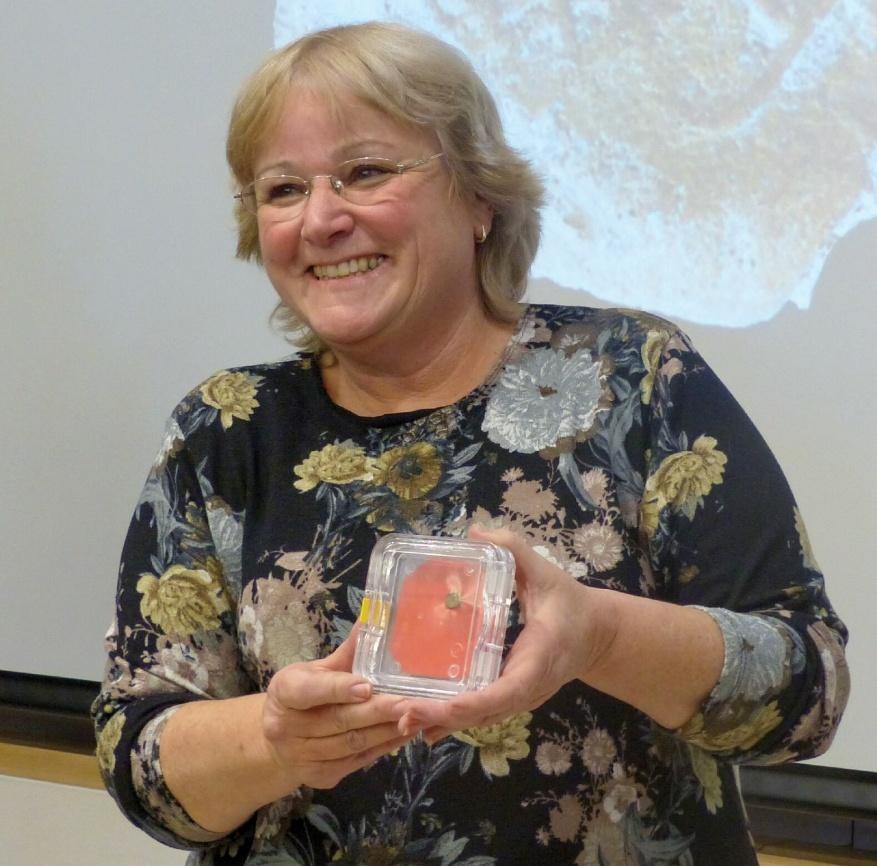
Ce n'est qu'en 2015, lorsqu'un membre de son équipe a entrepris d'analyser sérieusement une bulle bien conservée, qu’Eilat Mazar a pris conscience de l'importance de cette découverte. L'empreinte du sceau portait l'inscription suivante: « Appartenant à Ézéchias, fils d'Achaz, roi de Juda ».
Cette empreinte de sceau personnel du roi Ézéchias de Juda reste la seule bulle confirmée d'un roi israélite ou judéen jamais découverte lors d'une fouille scientifique contrôlée. (D'autres ont été découverts sur le marché des antiquités, mais leur provenance est inconnue.)
Avec les noms de deux rois bibliques, Ézéchias et Achaz, la bulle représente un soleil aux ailes repliées, flanqué de symboles ankh (symbolisant la « vie »). Un motif similaire de soleil ailé est estampillé sur des anses de poterie lmlk, courantes à cette époque. Ce motif est généralement associé au roi Ézéchias.
Les sceaux et anses de poterie lmlk, apparemment antérieurs au règne d'Ézéchias, présentent un symbolisme sensiblement différent sur le marché des antiquités. Parmi les motifs figurant sur ces objets figure le scarabée ailé, représentant le dieu égyptien Khépri.
Le prophète Isaïe a mis en garde Israël contre les dangers de faire confiance à l'Égypte ou de s'allier à elle (Isaïe 30-31).
2 Rois 18: 21 indique que le roi Ézéchias a placé sa confiance en l'Égypte pendant un temps, comme le prouve le symbolisme du scarabée.
L'imagerie de la bulle d'Ézéchias découverte par Eilat Mazar reflète cependant un changement significatif. Comme le résume Mazar, compte tenu de sa conception, ce sceau peut être attribué à l'époque qui a immédiatement suivi la défaite de l'Assyrie, après le repentir et la guérison miraculeuse du roi Ézéchias. L'image d'un soleil aux ailes tournées vers le bas, plutôt que vers le haut, est inhabituelle pour un roi et symbolise l'humilité.
Les symboles de l'ankh s'accordent bien avec la guérison miraculeuse d'Ézéchias et les 15 années supplémentaires qu'il a vécues (Isaïe 38). Le soleil ailé, avec les lignes qui en ressortent, pourrait même être un clin d'œil au miracle du soleil « volant » qui « retourna » sur le cadran solaire d'Achaz, signe divin de la guérison d'Ézéchias (verset 8).
Plusieurs versets bibliques illustrent l'imagerie du soleil et des ailes. Le Psaume 84: 12 dit: « Car l'Éternel, l'Éternel, est un soleil et un bouclier » ; le Psaume 91: 4 dit: « Tu trouveras un refuge sous ses ailes ».
Le langage de Malachie 4: 2 est remarquable: on dirait presque que Malachie regardait le sceau royal d'Ézéchias en écrivant. « Le soleil de justice se lèvera, et la guérison sera sous ses ailes… » (Malachie 4: 2).
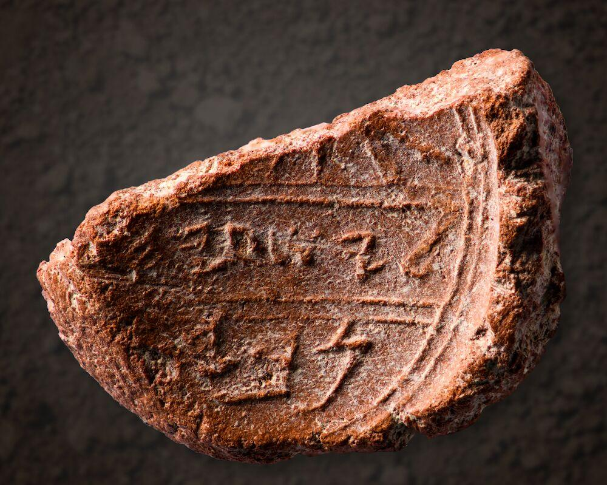
Lors des fouilles de 2009-2010, le Dr Mazar a mis au jour une autre bulle juste à côté de celle d'Ézéchias. En réalité, cette bulle a été trouvée à seulement 3 mètres de là, dans la même strate de sol. Elle datait également de la fin du VIIIe siècle avant notre ère.
Le problème avec cette bulle résidait dans son endommagement, ce qui rendait son interprétation difficile. Sa partie supérieure manquait. Mais cette absence n'a pas entravé son interprétation, car la moitié supérieure contenait une image, ou un motif, et non du texte. (Une petite partie restante de ce motif est visible en haut à droite de la bulle.)
La moitié inférieure de la bulle contient l'inscription essentielle portant le nom de son propriétaire. Deux lignes de texte ont été préservées. Les deux lignes sont légèrement endommagées sur le côté gauche par une empreinte de pouce visible, probablement laissée par le propriétaire du sceau en maintenant le bord de l'argile enfoncé tout en le tamponnant. Malgré les dommages, la première ligne d'écriture est facile à interpréter. Tous les experts s'accordent à dire qu'il s'agit de « Appartenant à Isaïe ».
Le débat porte sur le texte de la ligne inférieure, ou registre inférieur. Trois lettres sont lisibles: « Nvy ». Un locuteur hébreu, entendant ce mot (sans ajout de voyelles), le prendrait naturellement pour « prophète ». Cependant, la langue hébraïque repose sur des lettres racines essentielles. La dernière lettre racine de « prophète », l'aleph, est muette. Ainsi, « prophète » est correctement translittéré par Nvy', avec quatre lettres, et correctement prononcé avec l'ajout d'une voyelle « a », Navy'.
Mais l'emplacement attendu de la quatrième lettre, l'aleph, a été endommagé par l'empreinte du pouce. Celle-ci recouvre juste après la troisième lettre en partant de la droite sur la ligne inférieure (notez que l'hébreu se lit de droite à gauche). Une grande partie du débat sur cette bulle porte sur l'existence ou non de l'aleph. S'il existait un aleph, le mot se lirait « prophète ». Si l’aleph n’existait pas, ce serait un mot entièrement différent.
Sans connaître l'identité de la lettre manquante, personne ne peut affirmer avec certitude le contenu de l'inscription. Certains affirment que Nvy fait référence à un lieu précis de Juda; d'autres suggèrent qu'il s'agit du nom connu de « Novi » (et non du père d'Isaïe).
Bien que consciente du débat entourant l'identification de cet Isaïe, Eilat Mazar estimait que, parmi tous les scénarios possibles, la conclusion la plus logique était que l'inscription de la bulle se lisait ainsi: « Appartenant au prophète Isaïe ». Une reconstitution du contour de la bulle montre que la ligne inférieure pouvait (et devait) comporter une quatrième lettre, afin d'équilibrer le motif du sceau. De plus, le sceau a été retrouvé juste à côté de celui d'Ézéchias – le même roi mentionné avec le prophète Isaïe dans plus d'une douzaine d'Écritures – dans la même strate et dans le même quartier de Jérusalem où le prophète Isaïe servait. De plus, seuls quelques individus possédaient leurs propres sceaux, il s'agissait donc manifestement de personnages importants.
Compte tenu de tout ce qui précède, le Dr Mazar s'est interrogé: « Quelles sont les chances qu'il s'agisse d'un autre Isaïe Nvy[?], et non du célèbre Isaïe le Nvy? » Ainsi, la reconstruction la plus logique de la bulle est la suivante: « Appartenant à Isaïe le Prophète ».
Mazar a écrit: « Selon la Bible, les noms du roi Ézéchias et du prophète Isaïe sont mentionnés simultanément 14 fois sur 29 (2 Rois 19-20 ; Isaïe 37-39). Aucun autre personnage n'était plus proche du roi Ézéchias que le prophète Isaïe ».
À l'instar de Jéhucal et de Guedalia, le roi Ézéchias et le prophète Isaïe sont associés tant dans les Écritures que dans l'archéologie.
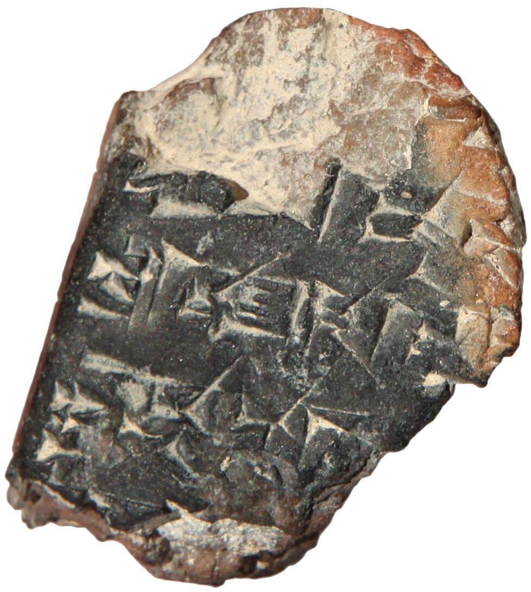
Ce minuscule fragment de tablette d'argile fut l'une des premières découvertes de petite taille réalisées lors de la saison Ophel 2009-2010 du Dr Mazar. Écrit en écriture cunéiforme et datant du XIVe siècle avant notre ère, il s'agit du plus ancien texte jamais découvert à Jérusalem.
En raison de son état fragmentaire, il est impossible de lire l'écriture dans son contexte. Les mots « tu », « tu étais », « eux », « faire » et « plus tard » y ont été déchiffrés. Selon le professeur Wayne Horowitz, expert en cunéiforme de l'Université hébraïque, la haute qualité de l'écriture « indique que le créateur de la tablette (fabriquée en argile locale) était un scribe de premier ordre ».
Ce fragment de tablette est comparable aux tablettes à lettres cananéennes d'Amarna, de forme carrée (elles aussi datées du XIVe siècle av. J.-C.); celle-ci constitue peut-être un petit coin d'une telle tablette. Les Lettres d'Amarna sont un ensemble de tablettes d'argile en écriture cunéiforme akkadienne, découvertes à Amarna, en Égypte. Elles contiennent la correspondance des dirigeants de Canaan envoyée au pharaon d'Égypte de l'époque. Ces lettres imploraient instamment le pharaon de l'aider contre les envahisseurs nomades « Habiru » qui s'emparaient du pays. Ces « Habiru », par leur nom, leurs actions et leur datation, correspondent bien au récit biblique de l’invasion hébraïque de la Terre promise à la même époque de la chronologie biblique.
Plusieurs lettres d'Amarna retrouvées en Égypte étaient spécifiquement envoyées par le roi de Jérusalem, comme celle-ci: « Que le [pharaon] songe à son pays; le pays du roi est perdu. Tout m'a attaqué… Je suis comme un navire au milieu de la mer… les Habiru ont pris les villes du roi. Il ne reste plus un seul maire au roi, mon seigneur; tout est perdu ». Eilat Mazar pensait que son fragment pourrait être une copie d'archive d'une de ces lettres.
Il est également remarquable que sa tablette de Jérusalem ait été brûlée; Juges 1: 8 dit que la tribu de Juda « a incendié la ville [de Jérusalem] » avant de la laisser aux mains de l'ennemi.
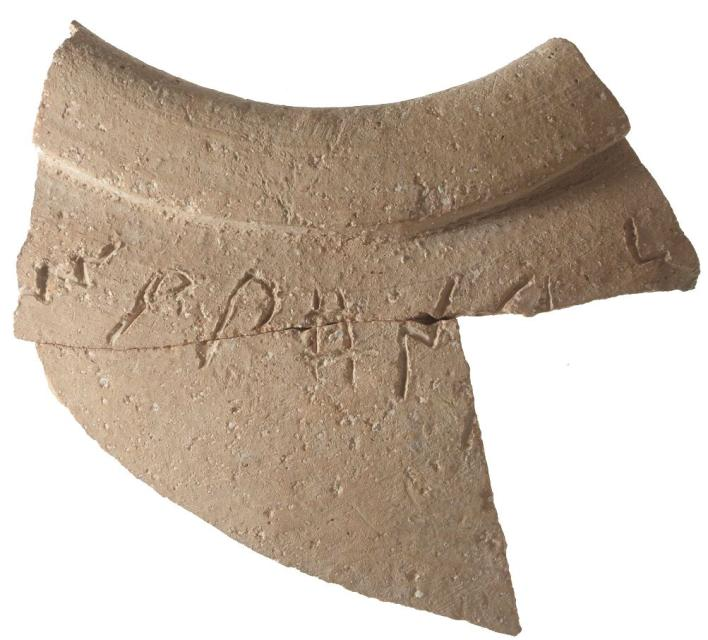
Lors des fouilles menées par le Dr Mazar en 2012, une autre inscription remarquable a fait surface, cette fois sur le bord d'un grand pithos. Datant du XIe ou du Xe siècle avant notre ère, soit pendant ou juste avant l'époque du roi David, cette inscription est la plus ancienne écriture alphabétique jamais découverte à Jérusalem.
Depuis, un débat important a eu lieu quant à savoir si l'inscription est cananéenne ou hébraïque. Les alphabets sont apparentés, et il peut être extrêmement difficile de les distinguer à cette époque reculée. Le Dr Gershon Galil, de l'Université de Haïfa, pense que l'un des mots de l'inscription fait référence au vin, suggérant que le pithos était destiné à contenir la boisson, ou du moins les ingrédients nécessaires à sa production. L'inscription a été principalement reconnue comme cananéenne, et compte tenu de sa datation, elle correspondrait au récit biblique selon lequel cette zone était exploitée, avant son acquisition par David, par le célèbre Jébuséen cananéen de la Bible, Ornan (2 Samuel 24; 1 Chroniques 21), qui exploitait cette zone du haut Ophel/Mont du Temple comme site agricole.
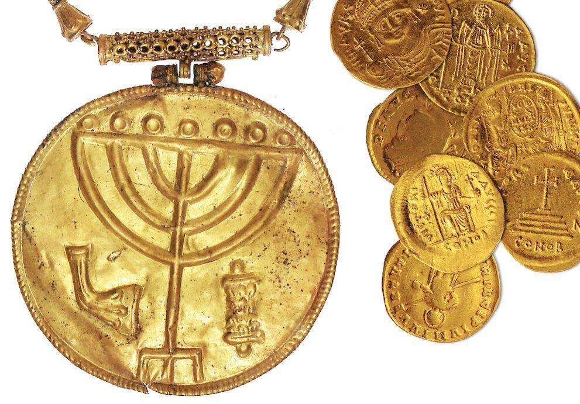
Si la plupart des découvertes les plus célèbres du Dr Mazar sont liées à la Bible, il existe des exceptions. L'une de ses trouvailles les plus célèbres date d'une période bien plus tardive et se distingue par son aspect intrinsèquement juif. Ce type de découverte est le « Saint Graal » de l'archéologie: un trésor en or, et Eilat Mazar l'a qualifiée de « découverte unique ».
Cinq jours seulement après le début de la saison Ophel 2013 du Dr Mazar, son équipe a découvert un trésor composé de 36 pièces d'or, de bijoux en argent et en or, ainsi que d'autres objets en argent et en or, dans un édifice byzantin du VIe siècle de notre ère. Ce bâtiment est situé à environ 50 mètres au sud du Mont du Temple. Le trésor le plus remarquable était un grand médaillon en or et une chaîne, la face du médaillon étant frappée d'un grand symbole de la Menorah à sept branches, d'un rouleau de la Torah et d'un shofar.
Le Dr Mazar pensait que le médaillon de la Menorah était probablement celui généralement utilisé pour orner un grand rouleau de la Torah dans une synagogue. Si tel est le cas, le médaillon et les objets qui l'accompagnent seraient les plus anciens ornements de rouleaux de la Torah jamais découverts.
D'après la date et la nature des strates, ainsi que la frappe des pièces d'or, le trésor aurait été enfoui à la hâte dans le sol de l'édifice byzantin au début du VIIe siècle de notre ère. S'appuyant sur des sources historiques, le Dr Mazar a pu apporter des précisions encore plus importantes, postulant que le trésor aurait été abandonné à l'époque de la conquête perse de Jérusalem en 614 de notre ère.
À l'époque, les Perses avaient promis aux Juifs que s'ils contribuaient au renversement des Byzantins chrétiens, ils seraient autorisés à reconstruire le Temple. Ce qu'ils firent, et l'on suppose que la construction s'étendit jusqu'à la construction d'un autel. Mais soudain, les Perses se retournèrent contre les Juifs et les chassèrent violemment de la ville. Eilat Mazar pensait que le trésor du médaillon de la Menorah était un don destiné à la reconstruction de l'édifice (les pièces d'or devant être fondues pour d'autres objets), mais que le trésor fut enterré à la hâte, les Juifs fuyant pour sauver leur vie.
Le médaillon de la Menorah et le trésor qui l'accompagnait sont aujourd'hui exposés au Musée d'Israël comme l'un des trois plus grands trésors d'or jamais découverts en Israël, et certainement le plus symboliquement significatif.
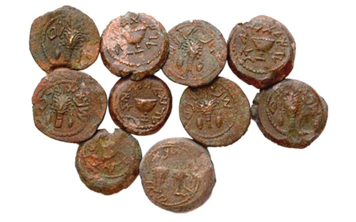
La quatrième et dernière fouille du Dr Mazar sur l'Ophel (en 2018) s'est concentrée sur une grande grotte de l'Ophel, ainsi que sur un édifice byzantin supérieur. Ces fouilles ont été entièrement financées et en grande partie assurées par le Herbert W. Armstrong College. L'une des découvertes majeures de cette campagne a été la découverte d'un grand nombre de pièces de monnaie de la Révolte vieilles de 2 000 ans dans la grotte de l'Ophel.
La grotte, de 15 mètres sur 8, a été découverte dans un état quasi intact, pratiquement intacte depuis la Révolte juive de 66-70 apr. J.-C. L'historien juif Josèphe a écrit que les Juifs descendaient dans des tunnels et des grottes pour se cacher pendant les derniers instants du siège de Jérusalem par les Romains. Ce fut le cas sur l'Ophel, et un important trésor de pièces de monnaie a été découvert dans toute la grotte.
Pendant les quatre années de la Grande Révolte, les Juifs frappèrent leurs propres pièces. Les pièces étaient décorées de divers symboles juifs, dont les « quatre espèces végétales » traditionnelles de la Fête des Tabernacles/Souccot – palmier, myrte, cédrat et saule – et une coupe qui faisait probablement partie du service du Temple. Les plus courantes de ces pièces sont celles de l'An II.
Les plus rares sont les pièces de l'An Quatre, qui montrent que, hormis Jérusalem, la majeure partie de la Judée avait été reconquise par Rome jusqu'alors. C'est au cours de cette dernière année que le message en hébreu ancien sur les pièces a changé. Au lieu de proclamer fièrement « À la liberté de Sion », elles portaient le message sobre « À la rédemption de Sion ».
Ce sont ces pièces de l'An Quatre qui ont été découvertes dans la grotte, témoignant de son utilisation aux derniers instants de la chute de Jérusalem. Les dizaines de pièces découvertes constituent l'un des plus importants (sinon le plus important) trésors de pièces de l'An Quatre jamais découverts.
Les pièces ont été retrouvées aux côtés de récipients en poterie brisés, notamment des jarres et des marmites. Selon Eilat Mazar, la grotte, restée intacte, a créé une « capsule temporelle » de la vie juive pendant la révolte. « Ce n’est pas un phénomène habituel que nous puissions arriver dans une grotte aussi fermée », a-t-elle déclaré, « intacte depuis 2 000 ans, y compris les tout derniers vestiges de vie du peuple qui a été assiégé à Jérusalem, qui a souffert à Jérusalem, jusqu’à la toute dernière minute de la période du Second Temple ».
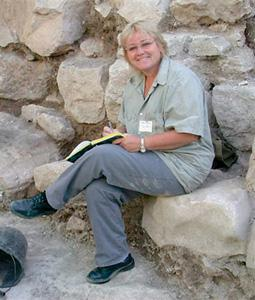
2 Samuel 5 décrit comment David et son armée conquirent Jébus en pénétrant dans la forteresse par une série de tunnels souterrains. Après avoir pris la ville, le roi David (avec l'aide du roi Hiram de Tyr) construisit son palais et « devint de plus en plus grand »(verset 10). Lorsque David devint roi d'Israël, Jérusalem (appelée « Jébus ») était habitée par les Jébuséens. En tant que roi, l'une des principales priorités de David était de conquérir Jérusalem. David comprenait le lien entre Jérusalem et Abraham et savait que Jérusalem serait la capitale d'Israël. ↩
2 Samuel 5 décrit comment David et son armée conquirent Jébus en pénétrant dans la forteresse par une série de tunnels souterrains. Après avoir pris la ville, le roi David (avec l'aide du roi Hiram de Tyr) construisit son palais et « devint de plus en plus grand »(verset 10). Compte tenu de la petite taille de Jébus, les archéologues se sont demandés comment il y avait suffisamment de place pour un palais royal. Une théorie avançait que le roi David avait démoli les structures jébuséennes existantes afin de faire place à son nouveau palais. En 1996, lorsqu'Eilat Mazar commença à réfléchir et à faire des recherches sur cette question, elle fit quelque chose de tout à fait logique, mais trop rare dans le domaine de l'archéologie: elle rechercha la réponse biblique à ces questions. ↩